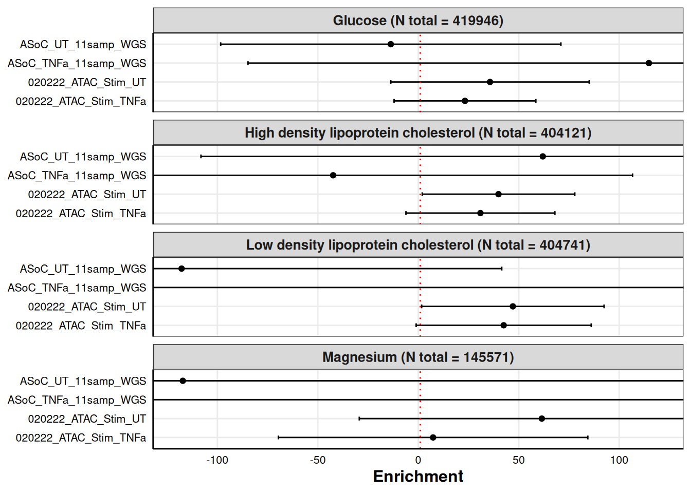
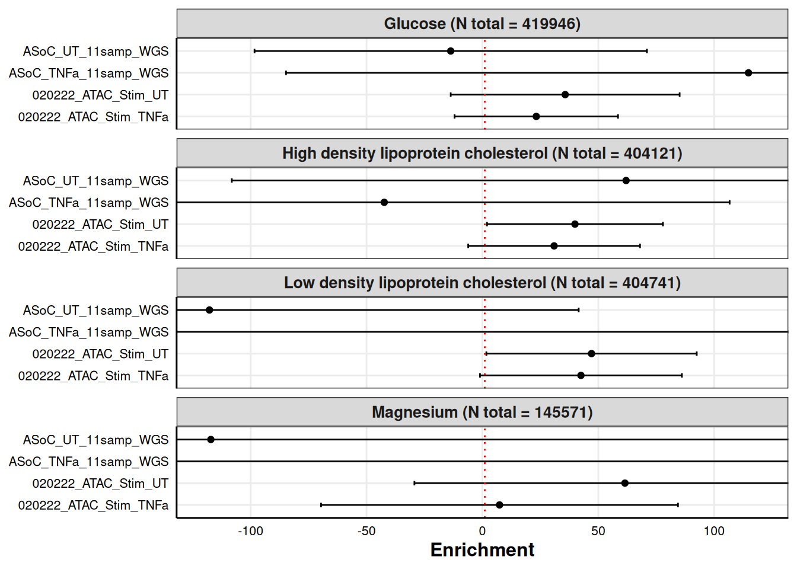
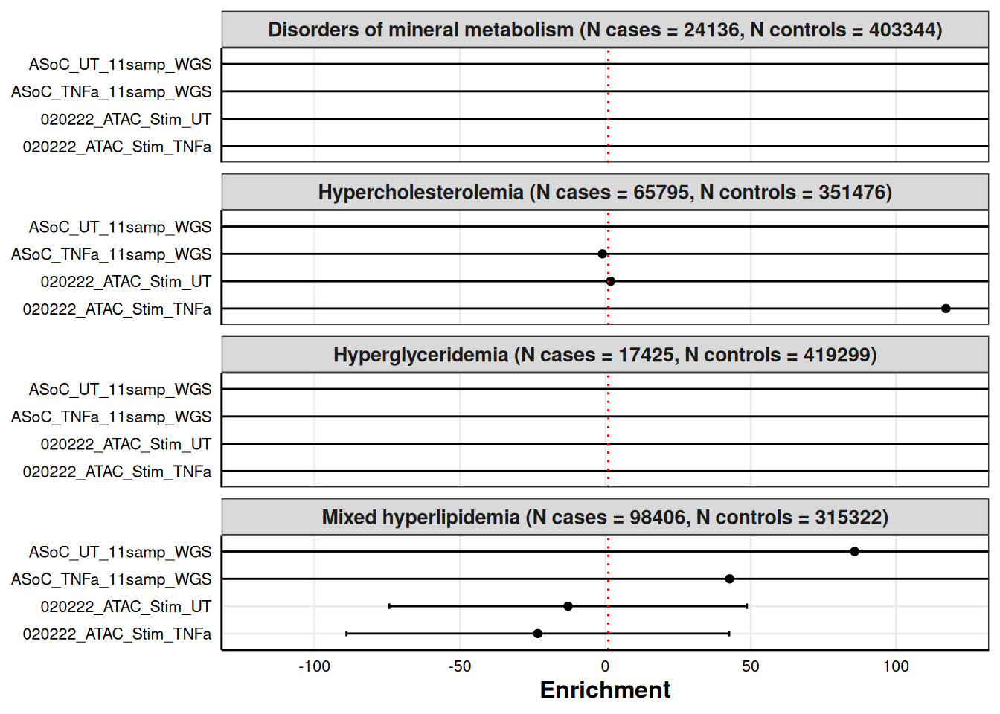
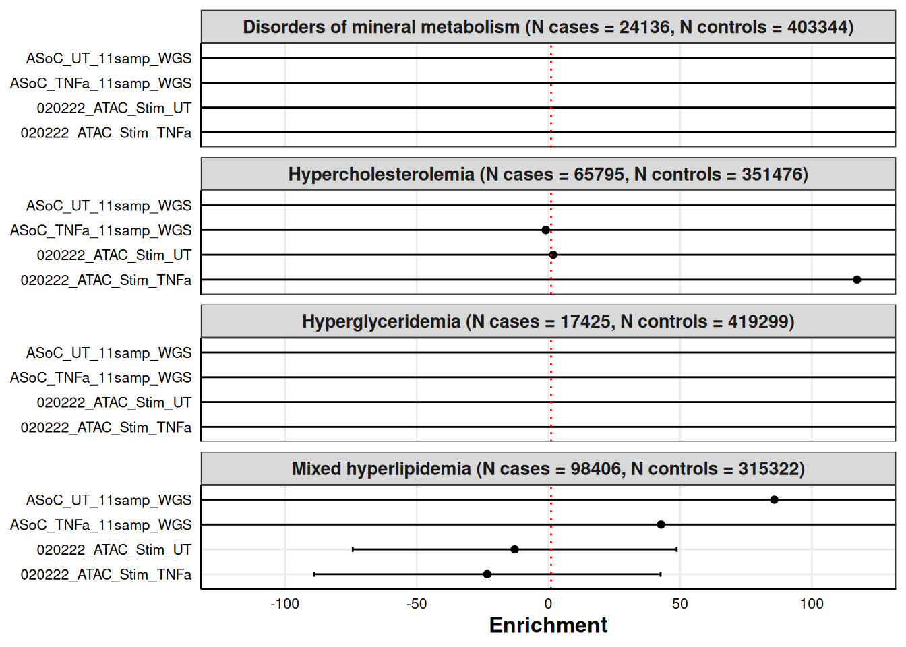
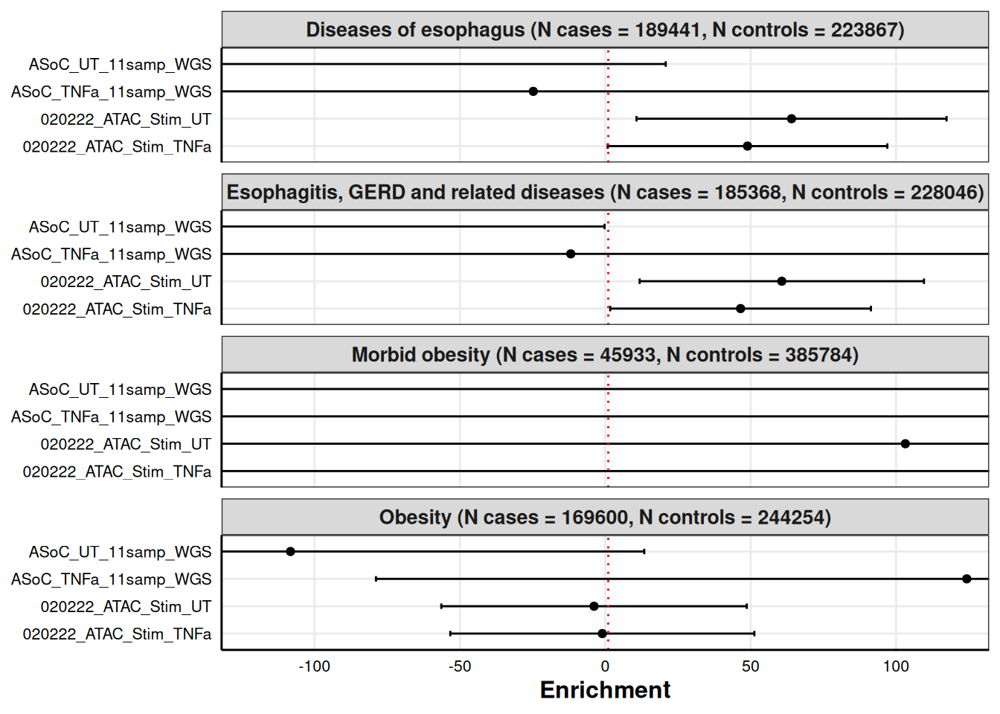
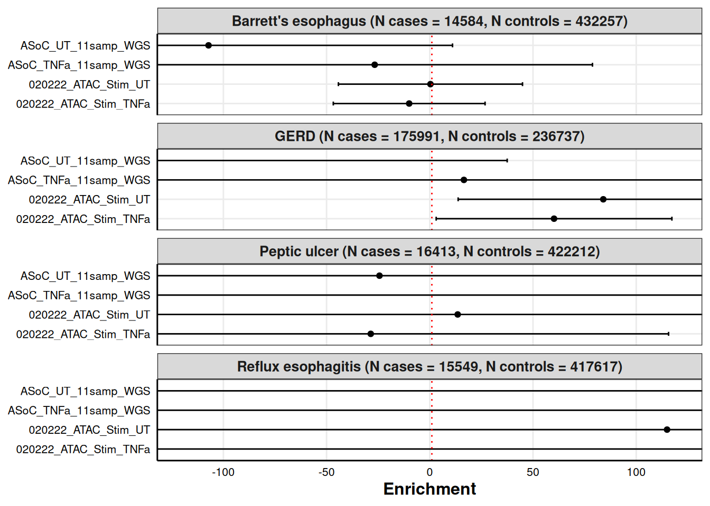
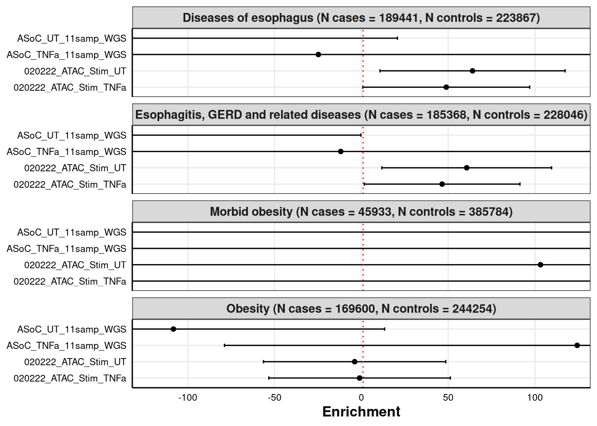
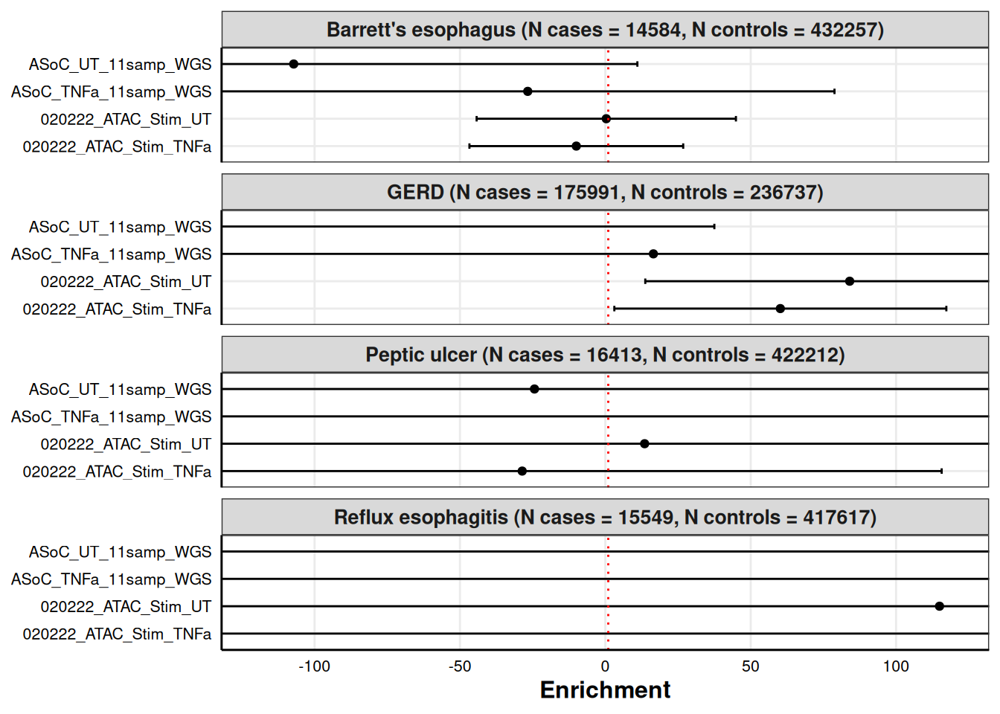
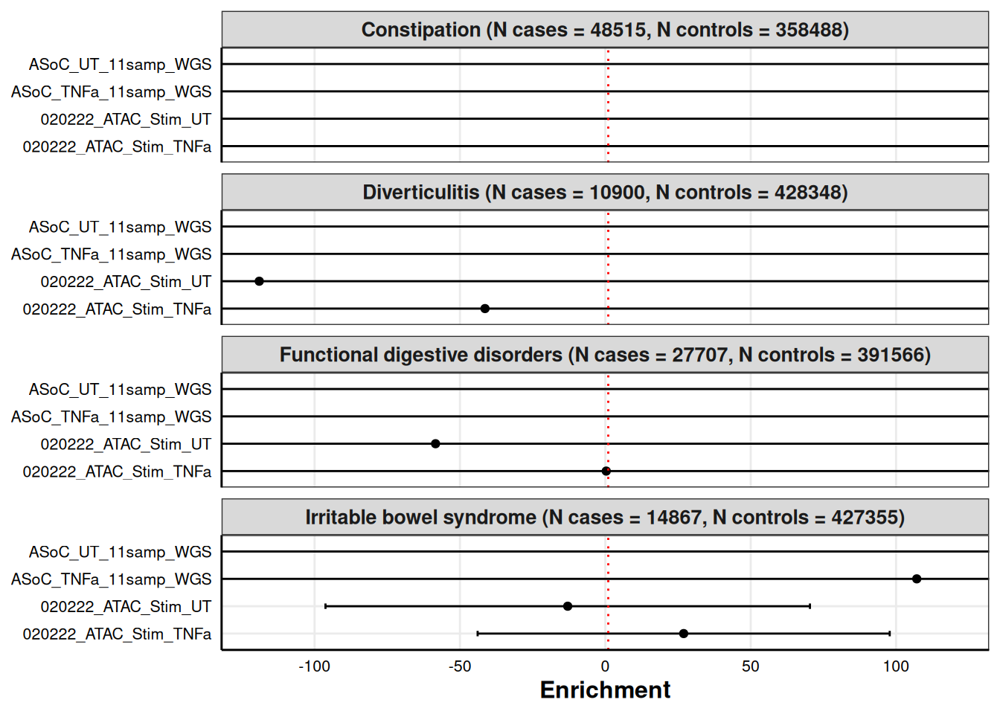
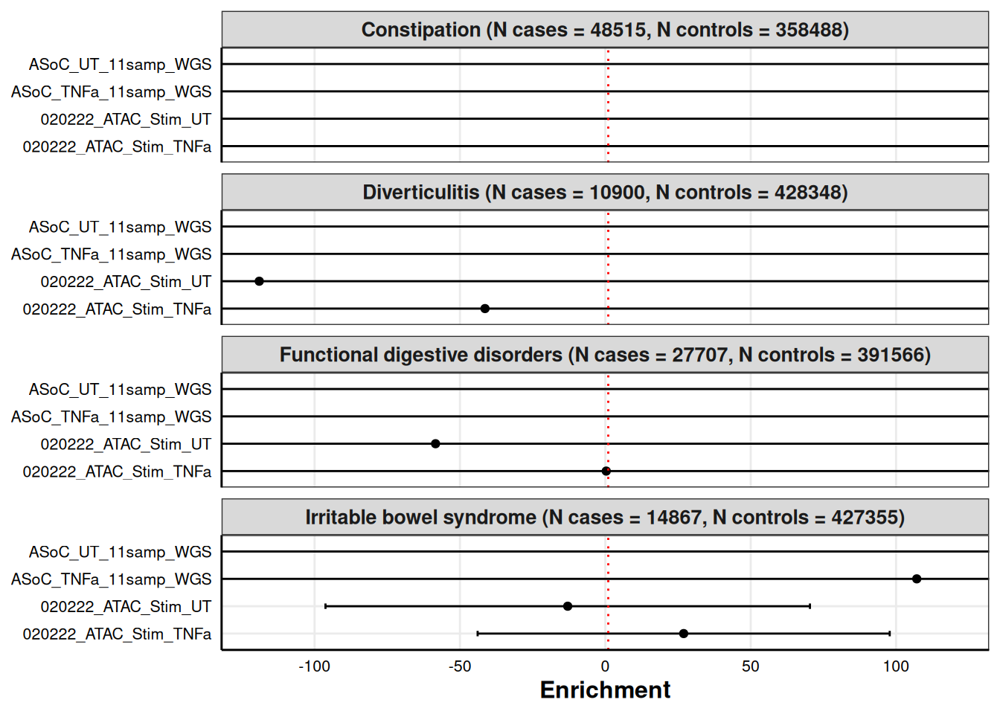

Functional Enrichment Analysis Plots
Katie Hooker
2025-01-15
Last updated: 2025-02-21
Checks: 6 1
Knit directory: organoid-rotation/
This reproducible R Markdown analysis was created with workflowr (version 1.7.1). The Checks tab describes the reproducibility checks that were applied when the results were created. The Past versions tab lists the development history.
Great! Since the R Markdown file has been committed to the Git repository, you know the exact version of the code that produced these results.
Great job! The global environment was empty. Objects defined in the global environment can affect the analysis in your R Markdown file in unknown ways. For reproduciblity it’s best to always run the code in an empty environment.
The command set.seed(20250108) was run prior to running
the code in the R Markdown file. Setting a seed ensures that any results
that rely on randomness, e.g. subsampling or permutations, are
reproducible.
Great job! Recording the operating system, R version, and package versions is critical for reproducibility.
Nice! There were no cached chunks for this analysis, so you can be confident that you successfully produced the results during this run.
Using absolute paths to the files within your workflowr project makes it difficult for you and others to run your code on a different machine. Change the absolute path(s) below to the suggested relative path(s) to make your code more reproducible.
| absolute | relative |
|---|---|
| /dartfs/rc/lab/S/Szhao/katieh/organoid-rotation/outputs/ | outputs |
| /dartfs/rc/lab/S/Szhao/katieh/organoid-rotation/data/MVP_pheno_list.csv | data/MVP_pheno_list.csv |
Great! You are using Git for version control. Tracking code development and connecting the code version to the results is critical for reproducibility.
The results in this page were generated with repository version e26f15e. See the Past versions tab to see a history of the changes made to the R Markdown and HTML files.
Note that you need to be careful to ensure that all relevant files for
the analysis have been committed to Git prior to generating the results
(you can use wflow_publish or
wflow_git_commit). workflowr only checks the R Markdown
file, but you know if there are other scripts or data files that it
depends on. Below is the status of the Git repository when the results
were generated:
Ignored files:
Ignored: .snakemake/auxiliary/
Ignored: .snakemake/conda-archive/
Ignored: .snakemake/conda/
Ignored: .snakemake/incomplete/
Ignored: .snakemake/locks/
Ignored: .snakemake/shadow/
Ignored: .snakemake/singularity/
Ignored: code/MVP-data-pull/job_error_3623155.err
Ignored: code/MVP-data-pull/job_output_3623155.out
Ignored: code/pipeline/.snakemake/auxiliary/
Ignored: code/pipeline/.snakemake/conda-archive/
Ignored: code/pipeline/.snakemake/conda/
Ignored: code/pipeline/.snakemake/incomplete/
Ignored: code/pipeline/.snakemake/shadow/
Ignored: code/pipeline/.snakemake/singularity/
Ignored: data/extracted/
Ignored: outputs/annotations/
Ignored: outputs/munged_sumstats/
Ignored: outputs/plots/
Ignored: raw-sumstats/
Untracked files:
Untracked: outputs/results/A1C_Mean_INT_enrichment.log
Untracked: outputs/results/A1C_Mean_INT_enrichment.results
Untracked: outputs/results/A1C_Mean_INT_signif_loci.txt
Untracked: outputs/results/ALT_Mean_INT_enrichment.log
Untracked: outputs/results/ALT_Mean_INT_enrichment.results
Untracked: outputs/results/ALT_Mean_INT_signif_loci.txt
Untracked: outputs/results/AST_Mean_INT_enrichment.log
Untracked: outputs/results/AST_Mean_INT_enrichment.results
Untracked: outputs/results/AST_Mean_INT_signif_loci.txt
Untracked: outputs/results/Albumin_Mean_INT_enrichment.log
Untracked: outputs/results/Albumin_Mean_INT_enrichment.results
Untracked: outputs/results/Albumin_Mean_INT_signif_loci.txt
Untracked: outputs/results/Bicarbonate_Mean_INT_enrichment.log
Untracked: outputs/results/Bicarbonate_Mean_INT_enrichment.results
Untracked: outputs/results/Bicarbonate_Mean_INT_signif_loci.txt
Untracked: outputs/results/Chloride_BSP_Mean_INT_enrichment.log
Untracked: outputs/results/Chloride_BSP_Mean_INT_enrichment.results
Untracked: outputs/results/Chloride_BSP_Mean_INT_signif_loci.txt
Untracked: outputs/results/CircChol_enrichment.log
Untracked: outputs/results/CircChol_enrichment.results
Untracked: outputs/results/CircChol_signif_loci.txt
Untracked: outputs/results/DoDM_enrichment.log
Untracked: outputs/results/DoDM_enrichment.results
Untracked: outputs/results/DoDM_signif_loci.txt
Untracked: outputs/results/DoThy_enrichment.log
Untracked: outputs/results/DoThy_enrichment.results
Untracked: outputs/results/DoThy_signif_loci.txt
Untracked: outputs/results/GIIBS_enrichment.log
Untracked: outputs/results/GIIBS_enrichment.results
Untracked: outputs/results/GIIBS_signif_loci.txt
Untracked: outputs/results/GIOth_enrichment.log
Untracked: outputs/results/GIOth_enrichment.results
Untracked: outputs/results/GIOth_signif_loci.txt
Untracked: outputs/results/GIPolyp_enrichment.log
Untracked: outputs/results/GIPolyp_enrichment.results
Untracked: outputs/results/GIPolyp_signif_loci.txt
Untracked: outputs/results/GIReflux_enrichment.log
Untracked: outputs/results/GIReflux_enrichment.results
Untracked: outputs/results/GIReflux_signif_loci.txt
Untracked: outputs/results/GIUlcer_enrichment.log
Untracked: outputs/results/GIUlcer_enrichment.results
Untracked: outputs/results/GIUlcer_signif_loci.txt
Untracked: outputs/results/Glucose_FS_Mean_INT_enrichment.log
Untracked: outputs/results/Glucose_FS_Mean_INT_enrichment.results
Untracked: outputs/results/Glucose_FS_Mean_INT_signif_loci.txt
Untracked: outputs/results/Glucose_Mean_INT_enrichment.log
Untracked: outputs/results/Glucose_Mean_INT_enrichment.results
Untracked: outputs/results/Glucose_Mean_INT_signif_loci.txt
Untracked: outputs/results/HDLC_Mean_INT_enrichment.log
Untracked: outputs/results/HDLC_Mean_INT_enrichment.results
Untracked: outputs/results/HDLC_Mean_INT_signif_loci.txt
Untracked: outputs/results/LDLC_Mean_INT_enrichment.log
Untracked: outputs/results/LDLC_Mean_INT_enrichment.results
Untracked: outputs/results/LDLC_Mean_INT_signif_loci.txt
Untracked: outputs/results/Mg_BSP_Mean_INT_enrichment.log
Untracked: outputs/results/Mg_BSP_Mean_INT_enrichment.results
Untracked: outputs/results/Mg_BSP_Mean_INT_signif_loci.txt
Untracked: outputs/results/Phe_153_enrichment.log
Untracked: outputs/results/Phe_153_enrichment.results
Untracked: outputs/results/Phe_153_signif_loci.txt
Untracked: outputs/results/Phe_208_enrichment.log
Untracked: outputs/results/Phe_208_enrichment.results
Untracked: outputs/results/Phe_208_signif_loci.txt
Untracked: outputs/results/Phe_241_1_enrichment.log
Untracked: outputs/results/Phe_241_1_enrichment.results
Untracked: outputs/results/Phe_241_1_signif_loci.txt
Untracked: outputs/results/Phe_241_enrichment.log
Untracked: outputs/results/Phe_241_enrichment.results
Untracked: outputs/results/Phe_241_signif_loci.txt
Untracked: outputs/results/Phe_244_4_enrichment.log
Untracked: outputs/results/Phe_244_4_enrichment.results
Untracked: outputs/results/Phe_244_4_signif_loci.txt
Untracked: outputs/results/Phe_244_enrichment.log
Untracked: outputs/results/Phe_244_enrichment.results
Untracked: outputs/results/Phe_244_signif_loci.txt
Untracked: outputs/results/Phe_250_1_enrichment.log
Untracked: outputs/results/Phe_250_1_enrichment.results
Untracked: outputs/results/Phe_250_1_signif_loci.txt
Untracked: outputs/results/Phe_250_22_enrichment.log
Untracked: outputs/results/Phe_250_22_enrichment.results
Untracked: outputs/results/Phe_250_22_signif_loci.txt
Untracked: outputs/results/Phe_250_23_enrichment.log
Untracked: outputs/results/Phe_250_23_enrichment.results
Untracked: outputs/results/Phe_250_23_signif_loci.txt
Untracked: outputs/results/Phe_250_24_enrichment.log
Untracked: outputs/results/Phe_250_24_enrichment.results
Untracked: outputs/results/Phe_250_24_signif_loci.txt
Untracked: outputs/results/Phe_250_2_enrichment.log
Untracked: outputs/results/Phe_250_2_enrichment.results
Untracked: outputs/results/Phe_250_2_signif_loci.txt
Untracked: outputs/results/Phe_250_41_enrichment.log
Untracked: outputs/results/Phe_250_41_enrichment.results
Untracked: outputs/results/Phe_250_41_signif_loci.txt
Untracked: outputs/results/Phe_250_42_enrichment.log
Untracked: outputs/results/Phe_250_42_enrichment.results
Untracked: outputs/results/Phe_250_42_signif_loci.txt
Untracked: outputs/results/Phe_250_4_enrichment.log
Untracked: outputs/results/Phe_250_4_enrichment.results
Untracked: outputs/results/Phe_250_4_signif_loci.txt
Untracked: outputs/results/Phe_250_enrichment.log
Untracked: outputs/results/Phe_250_enrichment.results
Untracked: outputs/results/Phe_250_signif_loci.txt
Untracked: outputs/results/Phe_260_enrichment.log
Untracked: outputs/results/Phe_260_enrichment.results
Untracked: outputs/results/Phe_260_signif_loci.txt
Untracked: outputs/results/Phe_261_2_enrichment.log
Untracked: outputs/results/Phe_261_2_enrichment.results
Untracked: outputs/results/Phe_261_2_signif_loci.txt
Untracked: outputs/results/Phe_261_4_enrichment.log
Untracked: outputs/results/Phe_261_4_enrichment.results
Untracked: outputs/results/Phe_261_4_signif_loci.txt
Untracked: outputs/results/Phe_261_enrichment.log
Untracked: outputs/results/Phe_261_enrichment.results
Untracked: outputs/results/Phe_261_signif_loci.txt
Untracked: outputs/results/Phe_269_enrichment.log
Untracked: outputs/results/Phe_269_enrichment.results
Untracked: outputs/results/Phe_269_signif_loci.txt
Untracked: outputs/results/Phe_271_3_enrichment.log
Untracked: outputs/results/Phe_271_3_enrichment.results
Untracked: outputs/results/Phe_271_3_signif_loci.txt
Untracked: outputs/results/Phe_271_enrichment.log
Untracked: outputs/results/Phe_271_enrichment.results
Untracked: outputs/results/Phe_271_signif_loci.txt
Untracked: outputs/results/Phe_272_11_enrichment.log
Untracked: outputs/results/Phe_272_11_enrichment.results
Untracked: outputs/results/Phe_272_11_signif_loci.txt
Untracked: outputs/results/Phe_272_12_enrichment.log
Untracked: outputs/results/Phe_272_12_enrichment.results
Untracked: outputs/results/Phe_272_12_signif_loci.txt
Untracked: outputs/results/Phe_272_13_enrichment.log
Untracked: outputs/results/Phe_272_13_enrichment.results
Untracked: outputs/results/Phe_272_13_signif_loci.txt
Untracked: outputs/results/Phe_272_1_enrichment.log
Untracked: outputs/results/Phe_272_1_enrichment.results
Untracked: outputs/results/Phe_272_1_signif_loci.txt
Untracked: outputs/results/Phe_272_enrichment.log
Untracked: outputs/results/Phe_272_enrichment.results
Untracked: outputs/results/Phe_272_signif_loci.txt
Untracked: outputs/results/Phe_275_enrichment.log
Untracked: outputs/results/Phe_275_enrichment.results
Untracked: outputs/results/Phe_275_signif_loci.txt
Untracked: outputs/results/Phe_276_12_enrichment.log
Untracked: outputs/results/Phe_276_12_enrichment.results
Untracked: outputs/results/Phe_276_12_signif_loci.txt
Untracked: outputs/results/Phe_276_13_enrichment.log
Untracked: outputs/results/Phe_276_13_enrichment.results
Untracked: outputs/results/Phe_276_13_signif_loci.txt
Untracked: outputs/results/Phe_276_14_enrichment.log
Untracked: outputs/results/Phe_276_14_enrichment.results
Untracked: outputs/results/Phe_276_14_signif_loci.txt
Untracked: outputs/results/Phe_276_1_enrichment.log
Untracked: outputs/results/Phe_276_1_enrichment.results
Untracked: outputs/results/Phe_276_1_signif_loci.txt
Untracked: outputs/results/Phe_276_4_enrichment.log
Untracked: outputs/results/Phe_276_4_enrichment.results
Untracked: outputs/results/Phe_276_4_signif_loci.txt
Untracked: outputs/results/Phe_276_5_enrichment.log
Untracked: outputs/results/Phe_276_5_enrichment.results
Untracked: outputs/results/Phe_276_5_signif_loci.txt
Untracked: outputs/results/Phe_276_enrichment.log
Untracked: outputs/results/Phe_276_enrichment.results
Untracked: outputs/results/Phe_276_signif_loci.txt
Untracked: outputs/results/Phe_278_11_enrichment.log
Untracked: outputs/results/Phe_278_11_enrichment.results
Untracked: outputs/results/Phe_278_11_signif_loci.txt
Untracked: outputs/results/Phe_278_1_enrichment.log
Untracked: outputs/results/Phe_278_1_enrichment.results
Untracked: outputs/results/Phe_278_1_signif_loci.txt
Untracked: outputs/results/Phe_278_enrichment.log
Untracked: outputs/results/Phe_278_enrichment.results
Untracked: outputs/results/Phe_278_signif_loci.txt
Untracked: outputs/results/Phe_530_11_enrichment.log
Untracked: outputs/results/Phe_530_11_enrichment.results
Untracked: outputs/results/Phe_530_11_signif_loci.txt
Untracked: outputs/results/Phe_530_13_enrichment.log
Untracked: outputs/results/Phe_530_13_enrichment.results
Untracked: outputs/results/Phe_530_13_signif_loci.txt
Untracked: outputs/results/Phe_530_14_enrichment.log
Untracked: outputs/results/Phe_530_14_enrichment.results
Untracked: outputs/results/Phe_530_14_signif_loci.txt
Untracked: outputs/results/Phe_530_enrichment.log
Untracked: outputs/results/Phe_530_enrichment.results
Untracked: outputs/results/Phe_530_signif_loci.txt
Untracked: outputs/results/Phe_531_enrichment.log
Untracked: outputs/results/Phe_531_enrichment.results
Untracked: outputs/results/Phe_531_signif_loci.txt
Untracked: outputs/results/Phe_535_enrichment.log
Untracked: outputs/results/Phe_535_enrichment.results
Untracked: outputs/results/Phe_535_signif_loci.txt
Untracked: outputs/results/Phe_536_enrichment.log
Untracked: outputs/results/Phe_536_enrichment.results
Untracked: outputs/results/Phe_536_signif_loci.txt
Untracked: outputs/results/Phe_550_1_enrichment.log
Untracked: outputs/results/Phe_550_1_enrichment.results
Untracked: outputs/results/Phe_550_1_signif_loci.txt
Untracked: outputs/results/Phe_550_2_enrichment.log
Untracked: outputs/results/Phe_550_2_enrichment.results
Untracked: outputs/results/Phe_550_2_signif_loci.txt
Untracked: outputs/results/Phe_550_4_enrichment.log
Untracked: outputs/results/Phe_550_4_enrichment.results
Untracked: outputs/results/Phe_550_4_signif_loci.txt
Untracked: outputs/results/Phe_550_enrichment.log
Untracked: outputs/results/Phe_550_enrichment.results
Untracked: outputs/results/Phe_550_signif_loci.txt
Untracked: outputs/results/Phe_558_enrichment.log
Untracked: outputs/results/Phe_558_enrichment.results
Untracked: outputs/results/Phe_558_signif_loci.txt
Untracked: outputs/results/Phe_560_enrichment.log
Untracked: outputs/results/Phe_560_enrichment.results
Untracked: outputs/results/Phe_560_signif_loci.txt
Untracked: outputs/results/Phe_561_1_enrichment.log
Untracked: outputs/results/Phe_561_1_enrichment.results
Untracked: outputs/results/Phe_561_1_signif_loci.txt
Untracked: outputs/results/Phe_561_enrichment.log
Untracked: outputs/results/Phe_561_enrichment.results
Untracked: outputs/results/Phe_561_signif_loci.txt
Untracked: outputs/results/Phe_562_1_enrichment.log
Untracked: outputs/results/Phe_562_1_enrichment.results
Untracked: outputs/results/Phe_562_1_signif_loci.txt
Untracked: outputs/results/Phe_562_2_enrichment.log
Untracked: outputs/results/Phe_562_2_enrichment.results
Untracked: outputs/results/Phe_562_2_signif_loci.txt
Untracked: outputs/results/Phe_562_enrichment.log
Untracked: outputs/results/Phe_562_enrichment.results
Untracked: outputs/results/Phe_562_signif_loci.txt
Untracked: outputs/results/Phe_563_enrichment.log
Untracked: outputs/results/Phe_563_enrichment.results
Untracked: outputs/results/Phe_563_signif_loci.txt
Untracked: outputs/results/Phe_564_1_enrichment.log
Untracked: outputs/results/Phe_564_1_enrichment.results
Untracked: outputs/results/Phe_564_1_signif_loci.txt
Untracked: outputs/results/Phe_564_enrichment.log
Untracked: outputs/results/Phe_564_enrichment.results
Untracked: outputs/results/Phe_564_signif_loci.txt
Untracked: outputs/results/Phe_565_enrichment.log
Untracked: outputs/results/Phe_565_enrichment.results
Untracked: outputs/results/Phe_565_signif_loci.txt
Untracked: outputs/results/Phe_571_51_enrichment.log
Untracked: outputs/results/Phe_571_51_enrichment.results
Untracked: outputs/results/Phe_571_51_signif_loci.txt
Untracked: outputs/results/Phe_571_5_enrichment.log
Untracked: outputs/results/Phe_571_5_enrichment.results
Untracked: outputs/results/Phe_571_5_signif_loci.txt
Untracked: outputs/results/Phe_571_enrichment.log
Untracked: outputs/results/Phe_571_enrichment.results
Untracked: outputs/results/Phe_571_signif_loci.txt
Untracked: outputs/results/Phe_573_7_enrichment.log
Untracked: outputs/results/Phe_573_7_enrichment.results
Untracked: outputs/results/Phe_573_7_signif_loci.txt
Untracked: outputs/results/Phe_574_1_enrichment.log
Untracked: outputs/results/Phe_574_1_enrichment.results
Untracked: outputs/results/Phe_574_1_signif_loci.txt
Untracked: outputs/results/Phe_574_enrichment.log
Untracked: outputs/results/Phe_574_enrichment.results
Untracked: outputs/results/Phe_574_signif_loci.txt
Untracked: outputs/results/Phe_577_enrichment.log
Untracked: outputs/results/Phe_577_enrichment.results
Untracked: outputs/results/Phe_577_signif_loci.txt
Untracked: outputs/results/Phe_578_2_enrichment.log
Untracked: outputs/results/Phe_578_2_enrichment.results
Untracked: outputs/results/Phe_578_2_signif_loci.txt
Untracked: outputs/results/Phe_578_9_enrichment.log
Untracked: outputs/results/Phe_578_9_enrichment.results
Untracked: outputs/results/Phe_578_9_signif_loci.txt
Untracked: outputs/results/Phe_578_enrichment.log
Untracked: outputs/results/Phe_578_enrichment.results
Untracked: outputs/results/Phe_578_signif_loci.txt
Untracked: outputs/results/Phe_785_enrichment.log
Untracked: outputs/results/Phe_785_enrichment.results
Untracked: outputs/results/Phe_785_signif_loci.txt
Untracked: outputs/results/Phe_789_enrichment.log
Untracked: outputs/results/Phe_789_enrichment.results
Untracked: outputs/results/Phe_789_signif_loci.txt
Untracked: outputs/results/Trig_Mean_INT_enrichment.log
Untracked: outputs/results/Trig_Mean_INT_enrichment.results
Untracked: outputs/results/Trig_Mean_INT_signif_loci.txt
Untracked: outputs/results/combined_results.txt
Untracked: outputs/results/concatenate_results.sh
Untracked: outputs/results/eGFR_Mean_INT_enrichment.log
Untracked: outputs/results/eGFR_Mean_INT_enrichment.results
Untracked: outputs/results/eGFR_Mean_INT_signif_loci.txt
Unstaged changes:
Modified: .gitignore
Modified: README.md
Modified: analysis/MVP-pheno-selection.Rmd
Deleted: analysis/enrichment-analysis.Rmd
Deleted: code/pipeline/.snakemake/locks/0.input.lock
Deleted: code/pipeline/.snakemake/locks/0.output.lock
Deleted: code/pipeline/.snakemake/locks/1.input.lock
Deleted: code/pipeline/.snakemake/locks/1.output.lock
Deleted: code/pipeline/.snakemake/locks/2.input.lock
Deleted: code/pipeline/.snakemake/locks/2.output.lock
Deleted: code/pipeline/.snakemake/locks/3.output.lock
Modified: code/pipeline/.snakemake/log/2025-02-17T115157.807486.snakemake.log
Modified: code/pipeline/.snakemake/log/2025-02-17T115159.973646.snakemake.log
Modified: code/pipeline/.snakemake/log/2025-02-17T115202.282603.snakemake.log
Modified: code/pipeline/.snakemake/log/2025-02-17T115202.282605.snakemake.log
Modified: code/pipeline/.snakemake/log/2025-02-17T115202.282608.snakemake.log
Modified: code/pipeline/array-outputs/run_ldsc_array_3654722.log
Modified: code/pipeline/array-outputs/run_ldsc_array_3654723.log
Modified: code/pipeline/array-outputs/run_ldsc_array_3654724.log
Modified: code/pipeline/array-outputs/run_ldsc_array_3654725.log
Modified: code/pipeline/array-outputs/run_ldsc_array_3654726.log
Modified: code/pipeline/array-outputs/run_ldsc_array_3654727.log
Note that any generated files, e.g. HTML, png, CSS, etc., are not included in this status report because it is ok for generated content to have uncommitted changes.
These are the previous versions of the repository in which changes were
made to the R Markdown (analysis/enrichment-plots.Rmd) and
HTML (docs/enrichment-plots.html) files. If you’ve
configured a remote Git repository (see ?wflow_git_remote),
click on the hyperlinks in the table below to view the files as they
were in that past version.
| File | Version | Author | Date | Message |
|---|---|---|---|---|
| Rmd | e26f15e | akhooker | 2025-02-21 | Visualize enrichment results |
This script is for plotting the outputs of the functional enrichment analysis run on the 97 selected MVP phenotypes.
enrichment_plot <- function(data, group, xlim=NULL){
group = sym(group)
p <- ggplot(data, aes(x = Enrichment, y = !!group))+
geom_point() +
xlab("Enrichment") +
geom_errorbarh(aes(xmin=Enrichment-ci, xmax=Enrichment+ci), height=.2) +
facet_wrap(Trait_label~.,ncol = 1) +
theme_bw() +
geom_vline(xintercept = 1,linetype="dotted", colour = "red") +
theme(axis.ticks = element_blank(),
panel.grid.minor = element_blank(),
axis.line = element_line(colour = "black"),
axis.text = element_text(size = 8, colour = "black"),
axis.title = element_text(face="bold",size = 12),
strip.text = element_text(face="bold",size = 12),
panel.spacing.x = unit(0.6,units = "cm"),
axis.title.y = element_blank(),
legend.position = "none",
plot.title = element_text(hjust = 0.5))
if(!is.null(xlim)){
p <- p + coord_cartesian(xlim = xlim)
}
print(p)
}output_path <- "/dartfs/rc/lab/S/Szhao/katieh/organoid-rotation/outputs/"
# Reading in trait abbreviations and their corresponding trait names
pheno_list <- read.csv("/dartfs/rc/lab/S/Szhao/katieh/organoid-rotation/data/MVP_pheno_list.csv")
# Fixing traits that are not unique after shortening
pheno_list[pheno_list$Description == "Irritable Bowel Syndrome (IBS)",]$Description <- "Irritable Bowel Syndrome survey result"
pheno_list[pheno_list$Description == "glucose (finger stick, mean, inv-norm transformed)",]$Description <- "Glucose finger stick result"
pheno_list <- pheno_list %>%
mutate(Short_desc = str_trim(gsub("\\(.*?\\)", "", Description))) %>%
mutate(Short_desc = str_to_sentence(Short_desc))
traits <- unique(pheno_list$Trait)
traitslab <- unique(pheno_list$Short_desc)
all_traits <- NULL
for (i in 1:length(traits)){
efile1 <- read.table(paste0(output_path, sprintf("results/%s_enrichment.results", traits[i])),
header=T)
enrich <- efile1[1:4,c(1,5,6,7)]
enrich$ci <- 1.96*enrich$Enrichment_std_error
enrich$Trait <- traits[i]
enrich$Trait_label <- traitslab[i]
if(is.null(all_traits)){
all_traits <- enrich
} else{
all_traits <- rbind(all_traits, enrich)
}
}# Plot all traits, four at a time
for (i in seq(1, nrow(all_traits)-4, 16)){
enrichment_plot(all_traits[i:(i+15),], group="Category", xlim=c(-120,120))
}


 



 
 


 



# Last trait
enrichment_plot(all_traits[385:388,], group="Category", xlim=c(-120,120))
sessionInfo()R version 4.4.2 (2024-10-31)
Platform: x86_64-pc-linux-gnu
Running under: Ubuntu 24.04.1 LTS
Matrix products: default
BLAS: /usr/lib/x86_64-linux-gnu/openblas-pthread/libblas.so.3
LAPACK: /usr/lib/x86_64-linux-gnu/openblas-pthread/libopenblasp-r0.3.26.so; LAPACK version 3.12.0
locale:
[1] LC_CTYPE=en_US.UTF-8 LC_NUMERIC=C
[3] LC_TIME=en_US.UTF-8 LC_COLLATE=en_US.UTF-8
[5] LC_MONETARY=en_US.UTF-8 LC_MESSAGES=en_US.UTF-8
[7] LC_PAPER=en_US.UTF-8 LC_NAME=C
[9] LC_ADDRESS=C LC_TELEPHONE=C
[11] LC_MEASUREMENT=en_US.UTF-8 LC_IDENTIFICATION=C
time zone: Etc/UTC
tzcode source: system (glibc)
attached base packages:
[1] stats graphics grDevices utils datasets methods base
other attached packages:
[1] lubridate_1.9.3 forcats_1.0.0 stringr_1.5.1 dplyr_1.1.4
[5] purrr_1.0.2 readr_2.1.5 tidyr_1.3.1 tibble_3.2.1
[9] ggplot2_3.5.1 tidyverse_2.0.0 workflowr_1.7.1
loaded via a namespace (and not attached):
[1] sass_0.4.9 utf8_1.2.4 generics_0.1.3 stringi_1.8.4
[5] hms_1.1.3 digest_0.6.37 magrittr_2.0.3 timechange_0.3.0
[9] evaluate_1.0.1 grid_4.4.2 fastmap_1.2.0 rprojroot_2.0.4
[13] jsonlite_1.8.9 processx_3.8.4 whisker_0.4.1 ps_1.8.1
[17] promises_1.3.2 httr_1.4.7 fansi_1.0.6 scales_1.3.0
[21] jquerylib_0.1.4 cli_3.6.3 rlang_1.1.4 munsell_0.5.1
[25] withr_3.0.2 cachem_1.1.0 yaml_2.3.10 tools_4.4.2
[29] tzdb_0.4.0 colorspace_2.1-1 httpuv_1.6.15 vctrs_0.6.5
[33] R6_2.5.1 lifecycle_1.0.4 git2r_0.35.0 fs_1.6.5
[37] pkgconfig_2.0.3 callr_3.7.6 pillar_1.9.0 bslib_0.8.0
[41] later_1.4.1 gtable_0.3.6 glue_1.8.0 Rcpp_1.0.13-1
[45] xfun_0.49 tidyselect_1.2.1 rstudioapi_0.17.1 knitr_1.49
[49] farver_2.1.2 htmltools_0.5.8.1 labeling_0.4.3 rmarkdown_2.29
[53] compiler_4.4.2 getPass_0.2-4